旧版运行时兼容边界退役 · 与 UDS8 逐项对比
目标 HEAD fa5e1d5 · 173 组登记例外全部来自真实 computed-style 审计 · 右列为 UDS8 令牌真值 · 每张截图均为真实运行页面
一、CM-06 · 输入框边框保留值
位置 web/src/styles/theme.css:671 · 注释标注"CM-06 ISOLATE：保留旧版值（EXCEPTION-REGISTRY）"
当前运行时值（暗色）
--input: #45465f来源：theme.css:671 保留值
UDS8 规范值（暗色）
--ds-color-border-input: #3B4A63来源：TOKEN-MANIFEST.json（Light #CBD5E1 / Dark #3B4A63）
两色均为深蓝灰，色差较小但可辨。审计实测差异组 component|border-color|rgba(69,70,95) 出现于 /pricing、/docs、/sign-in 等暗色页面。迁移影响：输入框边框略变深/变冷，可能扩大 26 张待批视觉基线差异。

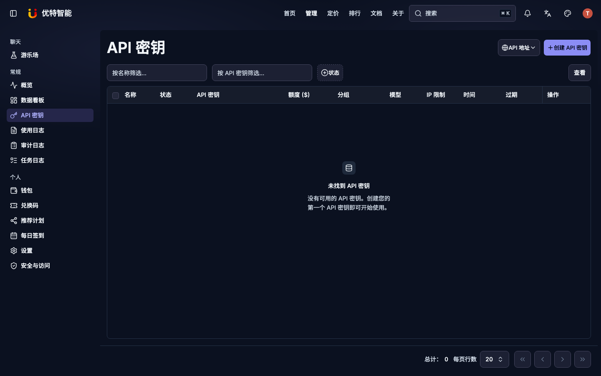
二、font-sans / font-manrope 历史别名（4 处引用）
位置 theme.css:45-46 定义别名，均指向 --font-ui，与 UDS8 唯一字体栈同值
当前（历史别名）
--font-sans: var(--font-ui)--font-manrope: var(--font-ui)组件 4 处引用 font-sans
UDS8 规范（唯一字体栈）
--font-ui: Inter → Noto Sans SC → …别名已指向同一栈，视觉零差异
4 处引用（均为 font-sans，font-manrope 无组件引用）：
- features/home/components/hero-terminal-demo.tsx:395
- features/task-plugins/components/plugin-endpoints.tsx:118
- features/channels/components/dialogs/advanced-custom-editor-dialog.tsx:1696
- components/ui/kbd.tsx:26
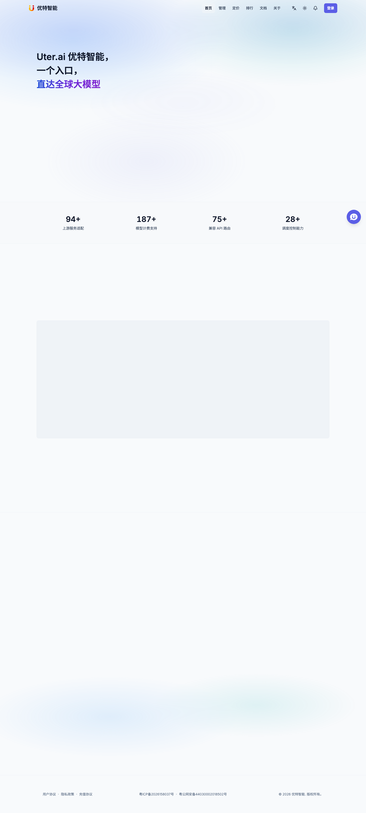
三、173 组登记例外 · 实测值 vs UDS8 值
按属性筛选 · 每行右侧为真实页面截图（点击放大）· 默认全部"保留例外"
| # | 属性 / 出现页面 | 规范判定 | 实测值 → UDS8 值 | 登记理由（规范裁定） | 真实截图 | 决策 |
|---|---|---|---|---|---|---|
| 1 | input-border-width ×10 元素 /wallet · light /usage-logs/audit · light /playground · light /profile · light |
需决策 | 0px → 1px --ds-border-width-input |
input-group 控件刻意使用 border-0，由外层 .group/input-group.border-input 承担 1px 边框；按文档建议确认为组合控件例外，不改内层边框。 | 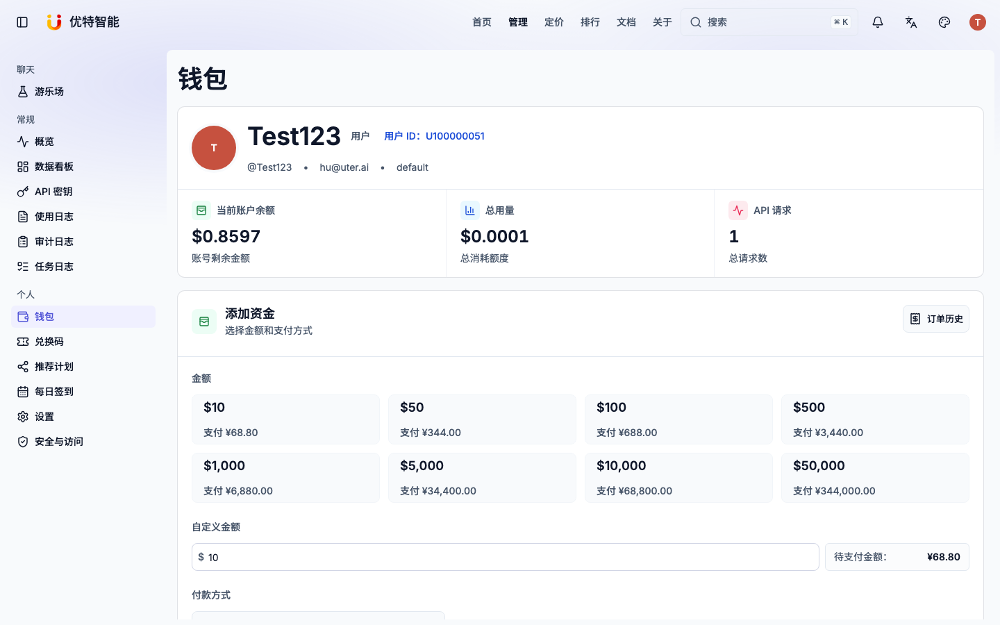 |
|
| 2 | line-height ×2211 元素 / · light /about · light /pricing · light /rankings · light |
需决策 | 21px → 20px --ds-leading-code |
按文档建议执行：确认行高是否属于有登记的组合例外。最近令牌仅为数值近似，语义不适用；不机械替换。 | ||
| 3 | sidebar-width ×384 元素 /dashboard · light /keys · light /wallet · light /usage-logs · light |
需决策 | 208.0px → 240px --ds-layout-sidebar-width |
按文档建议执行：确认侧栏展开/收起宽度。最近令牌仅为数值近似，语义不适用；不机械替换。 |  |
|
| 4 | table-row-height ×142 元素 /privacy-policy · light /user-agreement · light /recharge-agreement · light /privacy-policy · dark |
需决策 | 47.0px → 44px --ds-density-default-row |
按文档建议执行：确认表格行高密度档位。最近令牌仅为数值近似，语义不适用；不机械替换。 | ||
| 5 | border-color ×131 元素 / · dark /pricing · dark /rankings · dark /docs · dark |
需决策 | rgba(69, 70, 95, 1.000) → 无最近令牌（语义不适用） | 按文档建议执行：确认是否为品牌色、图表色或需登记的新语义色。最近令牌仅为数值近似，语义不适用；不机械替换。 | 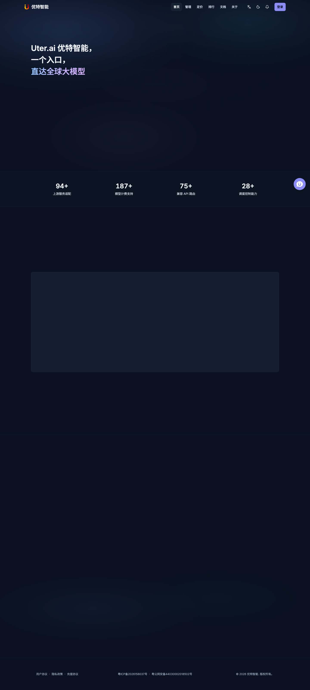 |
|
| 6 | line-height ×128 元素 /privacy-policy · light /user-agreement · light /recharge-agreement · light /wallet · light |
需决策 | 32px → 26px --ds-leading-long |
按文档建议执行：确认行高是否属于有登记的组合例外。最近令牌仅为数值近似，语义不适用；不机械替换。 | ||
| 7 | background-color ×123 元素 / · dark /pricing · dark /rankings · dark /sign-in · dark |
需决策 | rgba(70, 70, 96, 0.302) → 无最近令牌（语义不适用） | 按文档建议执行：确认是否为品牌色、图表色或需登记的新语义色。最近令牌仅为数值近似，语义不适用；不机械替换。 | ||
| 8 | svg-width ×104 元素 /dashboard · light /keys · light /wallet · light /usage-logs · light |
需决策 | 7px → 12px --ds-icon-2xs |
按文档建议执行：确认图标尺寸档位。最近令牌仅为数值近似，语义不适用；不机械替换。 | |
|
| 9 | svg-width ×86 元素 /pricing · light /rankings · light /sign-in · light /dashboard · light |
需决策 | 18px → 16px --ds-icon-xs |
按文档建议执行：确认图标尺寸档位。最近令牌仅为数值近似，语义不适用；不机械替换。 |  |
|
| 10 | color ×82 元素 / · light /setup · light |
需决策 | rgba(123, 127, 138, 1.000) → 无最近令牌（语义不适用） | 按文档建议执行：确认是否为品牌色、图表色或需登记的新语义色。最近令牌仅为数值近似，语义不适用；不机械替换。 | ||
| 11 | color ×82 元素 / · dark /about · dark /pricing · dark /rankings · dark |
需决策 | rgba(2, 6, 23, 1.000) → 无最近令牌（语义不适用） | 按文档建议执行：确认是否为品牌色、图表色或需登记的新语义色。最近令牌仅为数值近似，语义不适用；不机械替换。 | ||
| 12 | color ×82 元素 / · dark /setup · dark |
需决策 | rgba(140, 146, 154, 1.000) → 无最近令牌（语义不适用） | 按文档建议执行：确认是否为品牌色、图表色或需登记的新语义色。最近令牌仅为数值近似，语义不适用；不机械替换。 | ||
| 13 | table-row-height ×78 元素 /privacy-policy · light /user-agreement · light /recharge-agreement · light /privacy-policy · dark |
需决策 | 69.0px → 52px --ds-density-comfortable-row |
按文档建议执行：确认表格行高密度档位。最近令牌仅为数值近似，语义不适用；不机械替换。 | ||
| 14 | color ×77 元素 / · light /about · light /docs · light /setup · light |
需决策 | rgba(85, 88, 216, 1.000) → 无最近令牌（语义不适用） | 按文档建议执行：确认是否为品牌色、图表色或需登记的新语义色。最近令牌仅为数值近似，语义不适用；不机械替换。 | ||
| 15 | color ×77 元素 / · dark /about · dark /docs · dark /setup · dark |
需决策 | rgba(177, 179, 255, 1.000) → 无最近令牌（语义不适用） | 按文档建议执行：确认是否为品牌色、图表色或需登记的新语义色。最近令牌仅为数值近似，语义不适用；不机械替换。 | ||
| 16 | table-row-height ×64 元素 /privacy-policy · light /user-agreement · light /recharge-agreement · light /privacy-policy · dark |
需决策 | 46.5px → 44px --ds-density-default-row |
按文档建议执行：确认表格行高密度档位。最近令牌仅为数值近似，语义不适用；不机械替换。 | ||
| 17 | color ×56 元素 / · dark /setup · dark /dashboard · dark /wallet · dark |
需决策 | rgba(34, 197, 94, 1.000) → 无最近令牌（语义不适用） | 按文档建议执行：确认是否为品牌色、图表色或需登记的新语义色。最近令牌仅为数值近似，语义不适用；不机械替换。 | ||
| 18 | row-gap ×50 元素 / · light /about · light /docs · light /privacy-policy · light |
需决策 | 2px → 0px --ds-space-0 |
按文档建议执行：确认是密度档位、浏览器取整，还是需改为最近间距令牌。最近令牌仅为数值近似，语义不适用；不机械替换。 | ||
| 19 | column-gap ×40 元素 / · light /about · light /docs · light /privacy-policy · light |
需决策 | 2px → 0px --ds-space-0 |
按文档建议执行：确认是密度档位、浏览器取整，还是需改为最近间距令牌。最近令牌仅为数值近似，语义不适用；不机械替换。 | ||
| 20 | padding-top ×38 元素 / · light /docs · light /user-agreement · light /setup · light |
需决策 | 2px → 0px --ds-space-0 |
按文档建议执行：确认是密度档位、浏览器取整，还是需改为最近间距令牌。最近令牌仅为数值近似，语义不适用；不机械替换。 | ||
| 21 | padding-bottom ×38 元素 / · light /docs · light /user-agreement · light /setup · light |
需决策 | 2px → 0px --ds-space-0 |
按文档建议执行：确认是密度档位、浏览器取整，还是需改为最近间距令牌。最近令牌仅为数值近似，语义不适用；不机械替换。 | ||
| 22 | color ×38 元素 / · dark /setup · dark /dashboard · dark /wallet · dark |
需决策 | rgba(1, 141, 207, 1.000) → 无最近令牌（语义不适用） | 按文档建议执行：确认是否为品牌色、图表色或需登记的新语义色。最近令牌仅为数值近似，语义不适用；不机械替换。 | ||
| 23 | border-color ×36 元素 /pricing · light /rankings · light /docs · light /sign-in · light |
需决策 | rgba(209, 213, 229, 1.000) → 无最近令牌（语义不适用） | 按文档建议执行：确认是否为品牌色、图表色或需登记的新语义色。最近令牌仅为数值近似，语义不适用；不机械替换。 | |
|
| 24 | background-color ×34 元素 /dashboard · light /keys · light /wallet · light /usage-logs · light |
需决策 | rgba(198, 81, 63, 1.000) → 无最近令牌（语义不适用） | 按文档建议执行：确认是否为品牌色、图表色或需登记的新语义色。最近令牌仅为数值近似，语义不适用；不机械替换。 | |
|
| 25 | selection-control-size ×32 元素 /profile · light /security · light /profile · dark /security · dark |
需决策 | 36.0px → 32px --ds-icon-lg |
按文档建议执行：改为规范选择控件尺寸 | 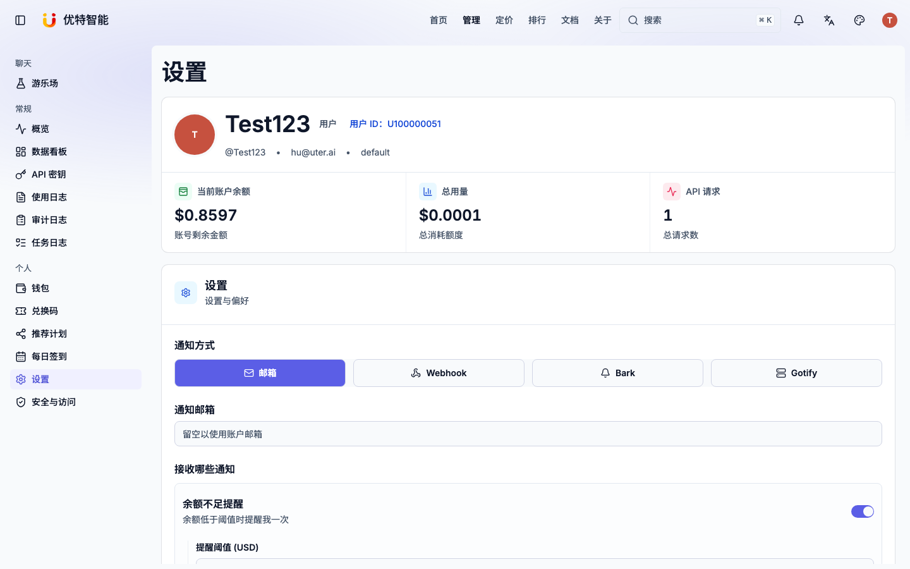 |
|
| 26 | table-row-height ×31 元素 /usage-logs/audit · light /usage-logs/audit · dark |
需决策 | 57.0px → 52px --ds-density-comfortable-row |
按文档建议执行：确认表格行高密度档位。最近令牌仅为数值近似，语义不适用；不机械替换。 | 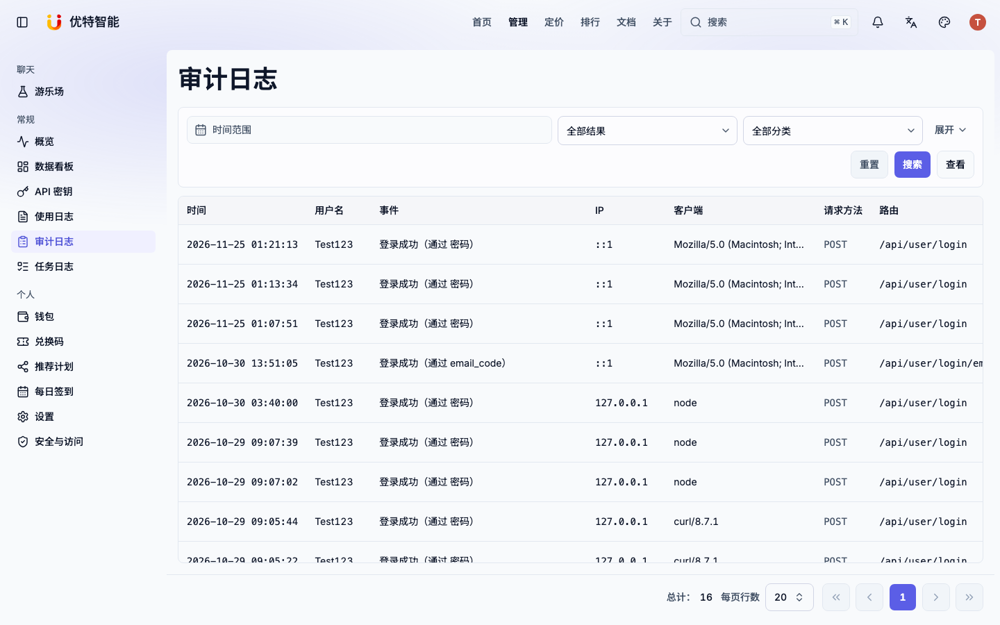 |
|
| 27 | border-color ×30 元素 /pricing · light /rankings · light /sign-in · light /dashboard · light |
需决策 | rgba(227, 232, 240, 0.600) → 无最近令牌（语义不适用） | 按文档建议执行：确认是否为品牌色、图表色或需登记的新语义色。最近令牌仅为数值近似，语义不适用；不机械替换。 | |
|
| 28 | border-color ×30 元素 /pricing · dark /rankings · dark /sign-in · dark /dashboard · dark |
需决策 | rgba(38, 52, 73, 0.600) → 无最近令牌（语义不适用） | 按文档建议执行：确认是否为品牌色、图表色或需登记的新语义色。最近令牌仅为数值近似，语义不适用；不机械替换。 | 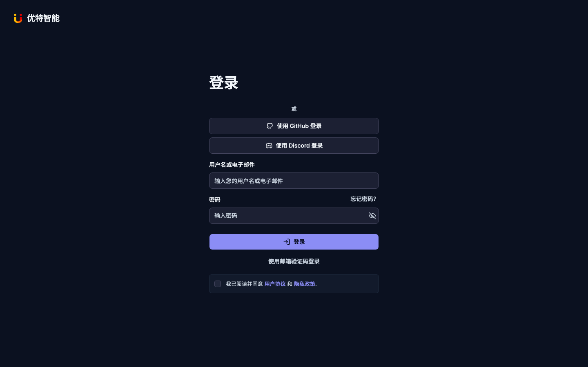 |
|
| 29 | border-color ×26 元素 / · light /setup · light |
需决策 | rgba(225, 232, 240, 0.400) → 无最近令牌（语义不适用） | 按文档建议执行：确认是否为品牌色、图表色或需登记的新语义色。最近令牌仅为数值近似，语义不适用；不机械替换。 | ||
| 30 | svg-width ×26 元素 /dashboard · light /keys · light /wallet · light /usage-logs · light |
需决策 | 8px → 12px --ds-icon-2xs |
按文档建议执行：确认图标尺寸档位。最近令牌仅为数值近似，语义不适用；不机械替换。 | |
|
| 31 | border-color ×26 元素 / · dark /setup · dark |
需决策 | rgba(37, 50, 72, 0.400) → 无最近令牌（语义不适用） | 按文档建议执行：确认是否为品牌色、图表色或需登记的新语义色。最近令牌仅为数值近似，语义不适用；不机械替换。 | ||
| 32 | sidebar-width ×24 元素 /dashboard · light /keys · light /wallet · light /usage-logs · light |
需决策 | 224.0px → 240px --ds-layout-sidebar-width |
按文档建议执行：确认侧栏展开/收起宽度。最近令牌仅为数值近似，语义不适用；不机械替换。 | |
|
| 33 | svg-width ×24 元素 /dashboard · light /keys · light /wallet · light /usage-logs · light |
需决策 | 6px → 12px --ds-icon-2xs |
按文档建议执行：确认图标尺寸档位。最近令牌仅为数值近似，语义不适用；不机械替换。 | |
|
| 34 | control-height ×24 元素 /dashboard · light /keys · light /wallet · light /usage-logs · light |
需决策 | 836.0px → 52px --ds-density-comfortable-row |
按文档建议执行：确认控件尺寸档位。最近令牌仅为数值近似，语义不适用；不机械替换。 | |
|
| 35 | button-height ×24 元素 /dashboard · light /keys · light /wallet · light /usage-logs · light |
需决策 | 836.0px → 52px --ds-density-comfortable-row |
按文档建议执行：改为规范按钮高度档位 | |
|
| 36 | background-color ×22 元素 / · light /about · light /docs · light /privacy-policy · light |
需决策 | rgba(225, 232, 240, 0.400) → 无最近令牌（语义不适用） | 按文档建议执行：确认是否为品牌色、图表色或需登记的新语义色。最近令牌仅为数值近似，语义不适用；不机械替换。 | ||
| 37 | background-color ×22 元素 / · dark /about · dark /docs · dark /privacy-policy · dark |
需决策 | rgba(37, 50, 72, 0.400) → 无最近令牌（语义不适用） | 按文档建议执行：确认是否为品牌色、图表色或需登记的新语义色。最近令牌仅为数值近似，语义不适用；不机械替换。 | ||
| 38 | box-shadow ×21 元素 /wallet · light /usage-logs/audit · light /playground · light /profile · light |
需决策 | rgba(0, 0, 0, 0) 0px 0px 0px 0px, rgba(0, 0, 0, 0) 0px 0px 0px 0px, rgba(0, 0, 0, 0) 0px 0px 0px 0px, rgb(15, 23, 42) 0px 0px 0px 0px, rgba(0, 0, 0, 0) 0px 0px → 卡片抬升 --ds-elevation-2 |
按文档建议执行：确认是否为规范登记的浮层阴影。最近令牌仅为数值近似，语义不适用；不机械替换。 | ||
| 39 | box-shadow ×21 元素 /wallet · dark /usage-logs/audit · dark /playground · dark /profile · dark |
需决策 | rgba(0, 0, 0, 0) 0px 0px 0px 0px, rgba(0, 0, 0, 0) 0px 0px 0px 0px, rgba(0, 0, 0, 0) 0px 0px 0px 0px, rgb(241, 245, 249) 0px 0px 0px 0px, rgba(0, 0, 0, 0) 0px 0 → 卡片抬升 --ds-elevation-2 |
按文档建议执行：确认是否为规范登记的浮层阴影。最近令牌仅为数值近似，语义不适用；不机械替换。 | 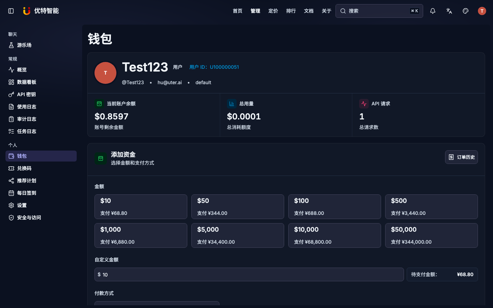 |
|
| 40 | border-color ×20 元素 / · light /setup · light |
需决策 | rgba(225, 231, 239, 0.502) → 无最近令牌（语义不适用） | 按文档建议执行：确认是否为品牌色、图表色或需登记的新语义色。最近令牌仅为数值近似，语义不适用；不机械替换。 | ||
| 41 | background-color ×18 元素 / · light /setup · light /wallet · light /checkin · light |
需决策 | rgba(242, 245, 248, 0.302) → 无最近令牌（语义不适用） | 按文档建议执行：确认是否为品牌色、图表色或需登记的新语义色。最近令牌仅为数值近似，语义不适用；不机械替换。 | ||
| 42 | control-height ×18 元素 /pricing · light /rankings · light /sign-in · light /usage-logs/audit · light |
需决策 | 24.0px → 16px --ds-control-h5-input-font-size |
按文档建议执行：确认控件尺寸档位。最近令牌仅为数值近似，语义不适用；不机械替换。 | |
|
| 43 | button-height ×18 元素 /pricing · light /rankings · light /sign-in · light /usage-logs/audit · light |
需决策 | 24.0px → 16px --ds-control-h5-input-font-size |
按文档建议执行：改为规范按钮高度档位 | |
|
| 44 | margin-top ×18 元素 /pricing · light /rankings · light /sign-in · light /dashboard · light |
需决策 | 2px → 0px --ds-space-0 |
按文档建议执行：确认是密度档位、浏览器取整，还是需改为最近间距令牌。最近令牌仅为数值近似，语义不适用；不机械替换。 | |
|
| 45 | table-row-height ×18 元素 /privacy-policy · light /user-agreement · light /recharge-agreement · light /privacy-policy · dark |
需决策 | 91.0px → 52px --ds-density-comfortable-row |
按文档建议执行：确认表格行高密度档位。最近令牌仅为数值近似，语义不适用；不机械替换。 | ||
| 46 | background-color ×18 元素 / · dark /setup · dark /wallet · dark /checkin · dark |
需决策 | rgba(30, 40, 60, 0.302) → 无最近令牌（语义不适用） | 按文档建议执行：确认是否为品牌色、图表色或需登记的新语义色。最近令牌仅为数值近似，语义不适用；不机械替换。 | ||
| 47 | background-color ×17 元素 /dashboard · light /keys · light /wallet · light /usage-logs · light |
需决策 | rgba(239, 243, 247, 0.251) → 无最近令牌（语义不适用） | 按文档建议执行：确认是否为品牌色、图表色或需登记的新语义色。最近令牌仅为数值近似，语义不适用；不机械替换。 | |
|
| 48 | line-height ×16 元素 / · light /setup · light / · dark /setup · dark |
需决策 | 54px → 56px --ds-leading-display |
按文档建议执行：确认行高是否属于有登记的组合例外。最近令牌仅为数值近似，语义不适用；不机械替换。 | ||
| 49 | background-color ×16 元素 / · light /setup · light /profile · light /referral · light |
需决策 | rgba(240, 245, 250, 0.200) → 无最近令牌（语义不适用） | 按文档建议执行：确认是否为品牌色、图表色或需登记的新语义色。最近令牌仅为数值近似，语义不适用；不机械替换。 | ||
| 50 | control-height ×16 元素 /wallet · light /wallet · dark |
需决策 | 72.0px → 52px --ds-density-comfortable-row |
按文档建议执行：确认控件尺寸档位。最近令牌仅为数值近似，语义不适用；不机械替换。 | ||
| 51 | button-height ×16 元素 /wallet · light /wallet · dark |
需决策 | 72.0px → 52px --ds-density-comfortable-row |
按文档建议执行：改为规范按钮高度档位 | ||
| 52 | background-color ×16 元素 / · dark /setup · dark /profile · dark /referral · dark |
需决策 | rgba(30, 40, 60, 0.200) → 无最近令牌（语义不适用） | 按文档建议执行：确认是否为品牌色、图表色或需登记的新语义色。最近令牌仅为数值近似，语义不适用；不机械替换。 | ||
| 53 | background-color ×15 元素 / · light /about · light /docs · light /setup · light |
需决策 | rgba(240, 240, 255, 1.000) → 无最近令牌（语义不适用） | 按文档建议执行：确认是否为品牌色、图表色或需登记的新语义色。最近令牌仅为数值近似，语义不适用；不机械替换。 | ||
| 54 | background-color ×15 元素 / · dark /about · dark /docs · dark /setup · dark |
需决策 | rgba(37, 38, 74, 1.000) → 无最近令牌（语义不适用） | 按文档建议执行：确认是否为品牌色、图表色或需登记的新语义色。最近令牌仅为数值近似，语义不适用；不机械替换。 | ||
| 55 | table-row-height ×14 元素 /privacy-policy · light /user-agreement · light /recharge-agreement · light /privacy-policy · dark |
需决策 | 68.5px → 52px --ds-density-comfortable-row |
按文档建议执行：确认表格行高密度档位。最近令牌仅为数值近似，语义不适用；不机械替换。 | ||
| 56 | border-color ×14 元素 / · dark /setup · dark |
需决策 | rgba(38, 52, 74, 0.502) → 无最近令牌（语义不适用） | 按文档建议执行：确认是否为品牌色、图表色或需登记的新语义色。最近令牌仅为数值近似，语义不适用；不机械替换。 | ||
| 57 | background-color ×14 元素 /profile · dark |
需决策 | rgba(2, 6, 23, 1.000) → 无最近令牌（语义不适用） | 按文档建议执行：确认是否为品牌色、图表色或需登记的新语义色。最近令牌仅为数值近似，语义不适用；不机械替换。 | 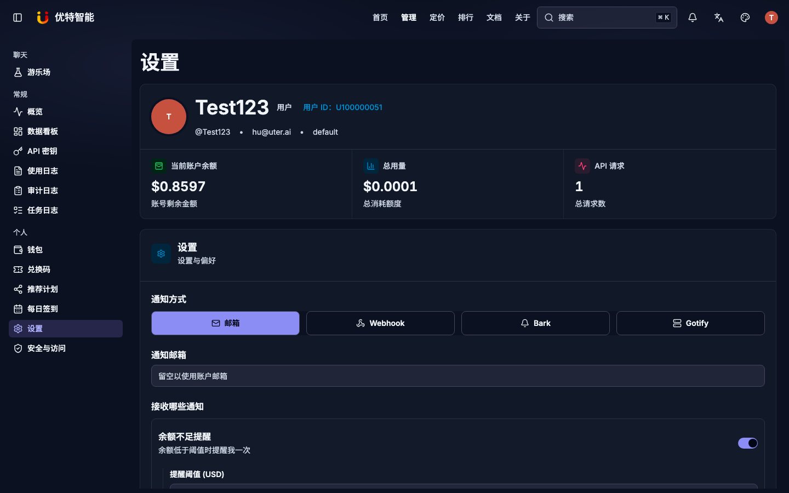 |
|
| 58 | margin-right ×12 元素 / · light /setup · light / · dark /setup · dark |
需决策 | 120px → 96px --ds-space-24 |
按文档建议执行：确认是密度档位、浏览器取整，还是需改为最近间距令牌。最近令牌仅为数值近似，语义不适用；不机械替换。 | ||
| 59 | margin-left ×12 元素 / · light /setup · light / · dark /setup · dark |
需决策 | 120px → 96px --ds-space-24 |
按文档建议执行：确认是密度档位、浏览器取整，还是需改为最近间距令牌。最近令牌仅为数值近似，语义不适用；不机械替换。 | ||
| 60 | padding-top ×12 元素 / · light /setup · light / · dark /setup · dark |
需决策 | 128px → 96px --ds-space-24 |
按文档建议执行：确认是密度档位、浏览器取整，还是需改为最近间距令牌。最近令牌仅为数值近似，语义不适用；不机械替换。 | ||
| 61 | padding-bottom ×12 元素 / · light /setup · light / · dark /setup · dark |
需决策 | 128px → 96px --ds-space-24 |
按文档建议执行：确认是密度档位、浏览器取整，还是需改为最近间距令牌。最近令牌仅为数值近似，语义不适用；不机械替换。 | ||
| 62 | border-color ×12 元素 / · light /setup · light |
需决策 | rgba(225, 232, 238, 0.302) → 无最近令牌（语义不适用） | 按文档建议执行：确认是否为品牌色、图表色或需登记的新语义色。最近令牌仅为数值近似，语义不适用；不机械替换。 | ||
| 63 | margin-right ×12 元素 / · light /setup · light / · dark /setup · dark |
需决策 | -8px → 0px --ds-space-0 |
按文档建议执行：确认是密度档位、浏览器取整，还是需改为最近间距令牌。最近令牌仅为数值近似，语义不适用；不机械替换。 | ||
| 64 | border-color ×12 元素 / · dark /setup · dark |
需决策 | rgba(36, 50, 73, 0.302) → 无最近令牌（语义不适用） | 按文档建议执行：确认是否为品牌色、图表色或需登记的新语义色。最近令牌仅为数值近似，语义不适用；不机械替换。 | ||
| 65 | background-color ×10 元素 / · light /setup · light / · dark /setup · dark |
需决策 | rgba(242, 248, 248, 0.149) → 无最近令牌（语义不适用） | 按文档建议执行：确认是否为品牌色、图表色或需登记的新语义色。最近令牌仅为数值近似，语义不适用；不机械替换。 | ||
| 66 | margin-right ×10 元素 /pricing · light /rankings · light /sign-in · light /sign-up · light |
需决策 | 368px → 96px --ds-space-24 |
按文档建议执行：确认是密度档位、浏览器取整，还是需改为最近间距令牌。最近令牌仅为数值近似，语义不适用；不机械替换。 | |
|
| 67 | margin-left ×10 元素 /pricing · light /rankings · light /sign-in · light /sign-up · light |
需决策 | 368px → 96px --ds-space-24 |
按文档建议执行：确认是密度档位、浏览器取整，还是需改为最近间距令牌。最近令牌仅为数值近似，语义不适用；不机械替换。 | |
|
| 68 | svg-width ×10 元素 /privacy-policy · light /dashboard · light /referral · light /privacy-policy · dark |
需决策 | 14px → 12px --ds-icon-2xs |
按文档建议执行：确认图标尺寸档位。最近令牌仅为数值近似，语义不适用；不机械替换。 | ||
| 69 | line-height ×8 元素 / · light /setup · light / · dark /setup · dark |
需决策 | 14px → 18px --ds-leading-caption |
按文档建议执行：确认行高是否属于有登记的组合例外。最近令牌仅为数值近似，语义不适用；不机械替换。 | ||
| 70 | margin-right ×8 元素 / · light /setup · light / · dark /setup · dark |
需决策 | 144px → 96px --ds-space-24 |
按文档建议执行：确认是密度档位、浏览器取整，还是需改为最近间距令牌。最近令牌仅为数值近似，语义不适用；不机械替换。 | ||
| 71 | margin-left ×8 元素 / · light /setup · light / · dark /setup · dark |
需决策 | 144px → 96px --ds-space-24 |
按文档建议执行：确认是密度档位、浏览器取整，还是需改为最近间距令牌。最近令牌仅为数值近似，语义不适用；不机械替换。 | ||
| 72 | control-height ×8 元素 / · light /docs · light /setup · light /wallet · light |
需决策 | 56.0px → 52px --ds-density-comfortable-row |
按文档建议执行：确认控件尺寸档位。最近令牌仅为数值近似，语义不适用；不机械替换。 | ||
| 73 | button-height ×8 元素 / · light /docs · light /setup · light /wallet · light |
需决策 | 56.0px → 52px --ds-density-comfortable-row |
按文档建议执行：改为规范按钮高度档位 | ||
| 74 | background-color ×8 元素 /dashboard · light /profile · light |
需决策 | rgba(248, 250, 252, 0.600) → 无最近令牌（语义不适用） | 按文档建议执行：确认是否为品牌色、图表色或需登记的新语义色。最近令牌仅为数值近似，语义不适用；不机械替换。 | |
|
| 75 | control-height ×8 元素 /dashboard · light /dashboard · dark |
需决策 | 66.0px → 52px --ds-density-comfortable-row |
按文档建议执行：确认控件尺寸档位。最近令牌仅为数值近似，语义不适用；不机械替换。 | |
|
| 76 | button-height ×8 元素 /dashboard · light /dashboard · dark |
需决策 | 66.0px → 52px --ds-density-comfortable-row |
按文档建议执行：改为规范按钮高度档位 | |
|
| 77 | margin-bottom ×8 元素 /profile · light /security · light /profile · dark /security · dark |
需决策 | 2px → 0px --ds-space-0 |
按文档建议执行：确认是密度档位、浏览器取整，还是需改为最近间距令牌。最近令牌仅为数值近似，语义不适用；不机械替换。 | ||
| 78 | background-color ×8 元素 /dashboard · dark /profile · dark |
需决策 | rgba(12, 17, 32, 0.600) → 无最近令牌（语义不适用） | 按文档建议执行：确认是否为品牌色、图表色或需登记的新语义色。最近令牌仅为数值近似，语义不适用；不机械替换。 | 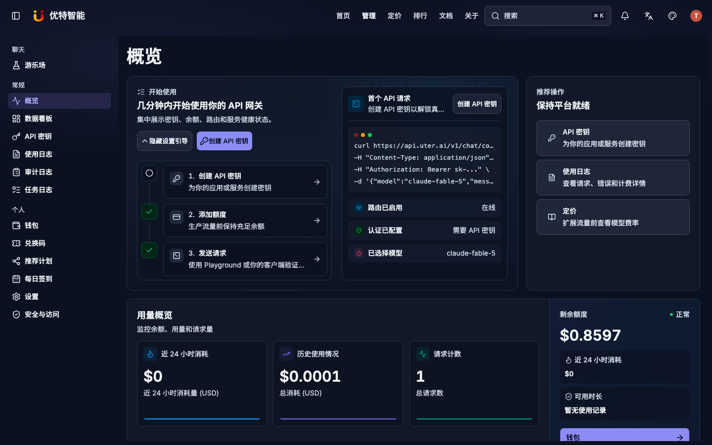 |
|
| 79 | background-color ×7 元素 / · light /about · light /docs · light /privacy-policy · light |
需决策 | rgba(242, 245, 248, 0.600) → 无最近令牌（语义不适用） | 按文档建议执行：确认是否为品牌色、图表色或需登记的新语义色。最近令牌仅为数值近似，语义不适用；不机械替换。 | ||
| 80 | background-color ×7 元素 / · dark /about · dark /docs · dark /privacy-policy · dark |
需决策 | rgba(30, 42, 58, 0.600) → 无最近令牌（语义不适用） | 按文档建议执行：确认是否为品牌色、图表色或需登记的新语义色。最近令牌仅为数值近似，语义不适用；不机械替换。 | ||
| 81 | background-color ×6 元素 /pricing · light /rankings · light /sign-in · light /dashboard · light |
需决策 | rgba(240, 245, 250, 0.400) → 无最近令牌（语义不适用） | 按文档建议执行：确认是否为品牌色、图表色或需登记的新语义色。最近令牌仅为数值近似，语义不适用；不机械替换。 | |
|
| 82 | control-height ×6 元素 /docs · light /docs · dark |
需决策 | 12.0px → 10px --ds-density-default-cell-y |
按文档建议执行：确认控件尺寸档位。最近令牌仅为数值近似，语义不适用；不机械替换。 | 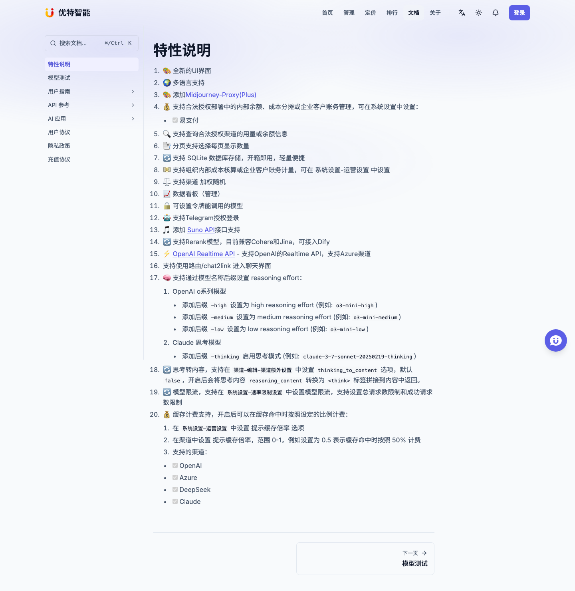 |
|
| 83 | button-height ×6 元素 /docs · light /docs · dark |
需决策 | 12.0px → 10px --ds-density-default-cell-y |
按文档建议执行：改为规范按钮高度档位 | ||
| 84 | margin-right ×6 元素 /privacy-policy · light /user-agreement · light /recharge-agreement · light /privacy-policy · dark |
需决策 | 240px → 96px --ds-space-24 |
按文档建议执行：确认是密度档位、浏览器取整，还是需改为最近间距令牌。最近令牌仅为数值近似，语义不适用；不机械替换。 | ||
| 85 | margin-left ×6 元素 /privacy-policy · light /user-agreement · light /recharge-agreement · light /privacy-policy · dark |
需决策 | 240px → 96px --ds-space-24 |
按文档建议执行：确认是密度档位、浏览器取整，还是需改为最近间距令牌。最近令牌仅为数值近似，语义不适用；不机械替换。 | ||
| 86 | control-height ×6 元素 /dashboard · light /dashboard · dark |
需决策 | 28.0px → 32px --ds-control-sm |
按文档建议执行：确认控件尺寸档位。最近令牌仅为数值近似，语义不适用；不机械替换。 | |
|
| 87 | button-height ×6 元素 /dashboard · light /dashboard · dark |
需决策 | 28.0px → 32px --ds-control-sm |
按文档建议执行：改为规范按钮高度档位 | |
|
| 88 | table-row-height ×6 元素 /keys · light /usage-logs · light /usage-logs/audit · light /keys · dark |
需决策 | 40.0px → 36px --ds-density-compact-row |
按文档建议执行：确认表格行高密度档位。最近令牌仅为数值近似，语义不适用；不机械替换。 | 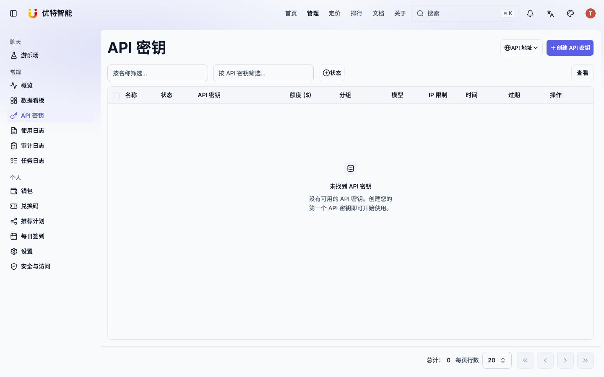 |
|
| 89 | margin-right ×6 元素 /usage-logs/audit · light /profile · light /usage-logs/audit · dark /profile · dark |
需决策 | -4px → 0px --ds-space-0 |
按文档建议执行：确认是密度档位、浏览器取整，还是需改为最近间距令牌。最近令牌仅为数值近似，语义不适用；不机械替换。 | ||
| 90 | background-color ×6 元素 / · dark /setup · dark |
需决策 | rgba(27, 40, 60, 0.149) → 无最近令牌（语义不适用） | 按文档建议执行：确认是否为品牌色、图表色或需登记的新语义色。最近令牌仅为数值近似，语义不适用；不机械替换。 | ||
| 91 | background-color ×6 元素 /pricing · dark /rankings · dark /sign-in · dark /dashboard · dark |
需决策 | rgba(30, 40, 60, 0.400) → 无最近令牌（语义不适用） | 按文档建议执行：确认是否为品牌色、图表色或需登记的新语义色。最近令牌仅为数值近似，语义不适用；不机械替换。 | ||
| 92 | box-shadow ×5 元素 /wallet · light /profile · light /checkin · light /redeem · light |
需决策 | rgba(0, 0, 0, 0) 0px 0px 0px 0px, rgba(0, 0, 0, 0) 0px 0px 0px 0px, rgba(0, 0, 0, 0) 0px 0px 0px 0px, rgb(248, 250, 252) 0px 0px 0px 4px, rgba(0, 0, 0, 0) 0px 0 → 卡片抬升 --ds-elevation-2 |
按文档建议执行：确认是否为规范登记的浮层阴影。最近令牌仅为数值近似，语义不适用；不机械替换。 | ||
| 93 | color ×5 元素 /dashboard · dark /redeem · dark |
需决策 | rgba(254, 154, 0, 1.000) → 无最近令牌（语义不适用） | 按文档建议执行：确认是否为品牌色、图表色或需登记的新语义色。最近令牌仅为数值近似，语义不适用；不机械替换。 | ||
| 94 | box-shadow ×5 元素 /wallet · dark /profile · dark /checkin · dark /redeem · dark |
需决策 | rgba(0, 0, 0, 0) 0px 0px 0px 0px, rgba(0, 0, 0, 0) 0px 0px 0px 0px, rgba(0, 0, 0, 0) 0px 0px 0px 0px, rgb(11, 17, 32) 0px 0px 0px 4px, rgba(0, 0, 0, 0) 0px 0px → 卡片抬升 --ds-elevation-2 |
按文档建议执行：确认是否为规范登记的浮层阴影。最近令牌仅为数值近似，语义不适用；不机械替换。 | ||
| 95 | background-color ×5 元素 /usage-logs · dark |
需决策 | rgba(32, 40, 60, 0.251) → 无最近令牌（语义不适用） | 按文档建议执行：确认是否为品牌色、图表色或需登记的新语义色。最近令牌仅为数值近似，语义不适用；不机械替换。 | 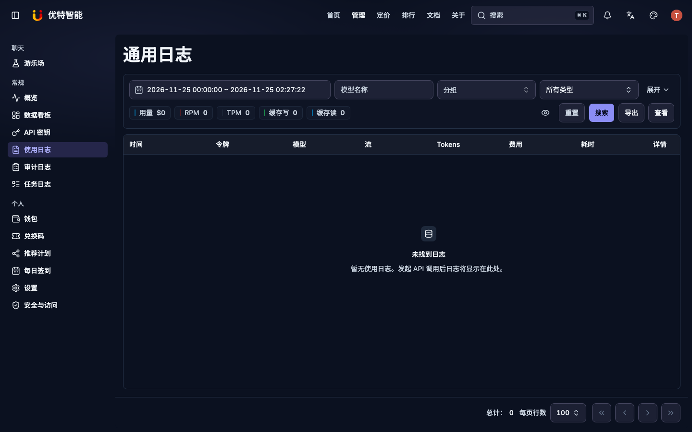 |
|
| 96 | padding-top ×4 元素 / · light /setup · light / · dark /setup · dark |
需决策 | 144px → 96px --ds-space-24 |
按文档建议执行：确认是密度档位、浏览器取整，还是需改为最近间距令牌。最近令牌仅为数值近似，语义不适用；不机械替换。 | ||
| 97 | padding-bottom ×4 元素 / · light /setup · light / · dark /setup · dark |
需决策 | 112px → 96px --ds-space-24 |
按文档建议执行：确认是密度档位、浏览器取整，还是需改为最近间距令牌。最近令牌仅为数值近似，语义不适用；不机械替换。 | ||
| 98 | color ×4 元素 / · light /setup · light |
需决策 | rgba(74, 88, 108, 1.000) → 无最近令牌（语义不适用） | 按文档建议执行：确认是否为品牌色、图表色或需登记的新语义色。最近令牌仅为数值近似，语义不适用；不机械替换。 | ||
| 99 | margin-left ×4 元素 / · light /setup · light / · dark /setup · dark |
需决策 | 142.469px → 96px --ds-space-24 |
按文档建议执行：确认是密度档位、浏览器取整，还是需改为最近间距令牌。最近令牌仅为数值近似，语义不适用；不机械替换。 | ||
| 100 | box-shadow ×4 元素 / · light /setup · light / · dark /setup · dark |
需决策 | rgba(0, 0, 0, 0) 0px 0px 0px 0px, rgba(0, 0, 0, 0) 0px 0px 0px 0px, rgba(0, 0, 0, 0) 0px 0px 0px 0px, rgba(0, 0, 0, 0) 0px 0px 0px 0px, rgba(16, 185, 129, 0.45) → 卡片抬升 --ds-elevation-2 |
按文档建议执行：确认是否为规范登记的浮层阴影。最近令牌仅为数值近似，语义不适用；不机械替换。 | ||
| 101 | background-color ×4 元素 / · light /setup · light /dashboard · light |
需决策 | rgba(236, 253, 245, 1.000) → 无最近令牌（语义不适用） | 按文档建议执行：确认是否为品牌色、图表色或需登记的新语义色。最近令牌仅为数值近似，语义不适用；不机械替换。 | ||
| 102 | svg-width ×4 元素 / · light /setup · light / · dark /setup · dark |
需决策 | 10px → 12px --ds-icon-2xs |
按文档建议执行：确认图标尺寸档位。最近令牌仅为数值近似，语义不适用；不机械替换。 | ||
| 103 | margin-right ×4 元素 / · light /setup · light / · dark /setup · dark |
需决策 | 112px → 96px --ds-space-24 |
按文档建议执行：确认是密度档位、浏览器取整，还是需改为最近间距令牌。最近令牌仅为数值近似，语义不适用；不机械替换。 | ||
| 104 | margin-left ×4 元素 / · light /setup · light / · dark /setup · dark |
需决策 | 112px → 96px --ds-space-24 |
按文档建议执行：确认是密度档位、浏览器取整，还是需改为最近间距令牌。最近令牌仅为数值近似，语义不适用；不机械替换。 | ||
| 105 | sidebar-width ×4 元素 /about · light /docs · light /about · dark /docs · dark |
需决策 | 235.0px → 240px --ds-layout-sidebar-width |
按文档建议执行：确认侧栏展开/收起宽度。最近令牌仅为数值近似，语义不适用；不机械替换。 | 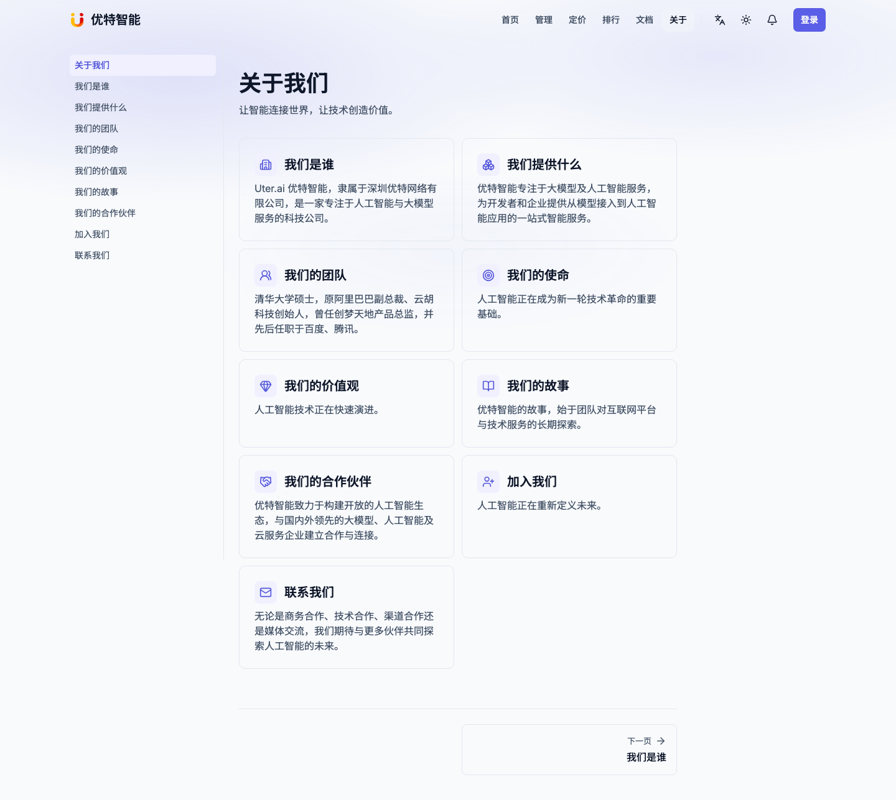 |
|
| 106 | table-row-height ×4 元素 /privacy-policy · light /user-agreement · light /privacy-policy · dark /user-agreement · dark |
需决策 | 90.5px → 52px --ds-density-comfortable-row |
按文档建议执行：确认表格行高密度档位。最近令牌仅为数值近似，语义不适用；不机械替换。 | ||
| 107 | background-color ×4 元素 /dashboard · light /referral · light |
需决策 | rgba(248, 249, 252, 0.702) → 无最近令牌（语义不适用） | 按文档建议执行：确认是否为品牌色、图表色或需登记的新语义色。最近令牌仅为数值近似，语义不适用；不机械替换。 | |
|
| 108 | svg-width ×4 元素 /dashboard · light /dashboard · dark |
需决策 | 237.328px → 32px --ds-icon-lg |
按文档建议执行：确认图标尺寸档位。最近令牌仅为数值近似，语义不适用；不机械替换。 | |
|
| 109 | background-color ×4 元素 /keys · light /usage-logs · light /usage-logs/audit · light |
需决策 | rgba(245, 246, 249, 1.000) → 无最近令牌（语义不适用） | 按文档建议执行：确认是否为品牌色、图表色或需登记的新语义色。最近令牌仅为数值近似，语义不适用；不机械替换。 | ||
| 110 | table-row-height ×4 元素 /keys · light /usage-logs · light /keys · dark /usage-logs · dark |
需决策 | 400.0px → 52px --ds-density-comfortable-row |
按文档建议执行：确认表格行高密度档位。最近令牌仅为数值近似，语义不适用；不机械替换。 | ||
| 111 | margin-right ×4 元素 /playground · light /playground · dark |
需决策 | 148px → 96px --ds-space-24 |
按文档建议执行：确认是密度档位、浏览器取整，还是需改为最近间距令牌。最近令牌仅为数值近似，语义不适用；不机械替换。 | 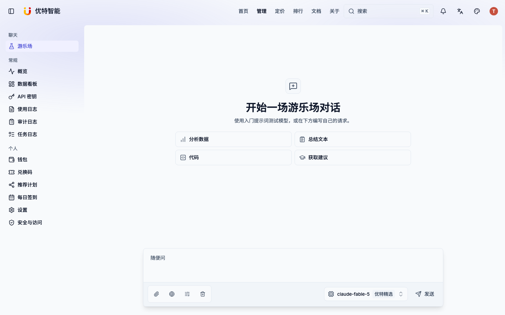 |
|
| 112 | margin-left ×4 元素 /playground · light /playground · dark |
需决策 | 148px → 96px --ds-space-24 |
按文档建议执行：确认是密度档位、浏览器取整，还是需改为最近间距令牌。最近令牌仅为数值近似，语义不适用；不机械替换。 | ||
| 113 | color ×4 元素 / · dark /setup · dark |
需决策 | rgba(201, 207, 221, 1.000) → 无最近令牌（语义不适用） | 按文档建议执行：确认是否为品牌色、图表色或需登记的新语义色。最近令牌仅为数值近似，语义不适用；不机械替换。 | ||
| 114 | background-color ×4 元素 / · dark /setup · dark /dashboard · dark |
需决策 | rgba(0, 37, 22, 1.000) → 无最近令牌（语义不适用） | 按文档建议执行：确认是否为品牌色、图表色或需登记的新语义色。最近令牌仅为数值近似，语义不适用；不机械替换。 | ||
| 115 | background-color ×4 元素 /keys · dark /usage-logs · dark /usage-logs/audit · dark |
需决策 | rgba(22, 28, 43, 1.000) → 无最近令牌（语义不适用） | 按文档建议执行：确认是否为品牌色、图表色或需登记的新语义色。最近令牌仅为数值近似，语义不适用；不机械替换。 | ||
| 116 | button-height ×3 元素 /dashboard · light |
需决策 | 70.6px → 52px --ds-density-comfortable-row |
按文档建议执行：改为规范按钮高度档位 | |
|
| 117 | background-color ×3 元素 / · dark /setup · dark /dashboard · dark |
需决策 | rgba(34, 197, 94, 1.000) → 无最近令牌（语义不适用） | 按文档建议执行：确认是否为品牌色、图表色或需登记的新语义色。最近令牌仅为数值近似，语义不适用；不机械替换。 | ||
| 118 | background-color ×3 元素 /dashboard · dark |
需决策 | rgba(11, 17, 31, 0.702) → 无最近令牌（语义不适用） | 按文档建议执行：确认是否为品牌色、图表色或需登记的新语义色。最近令牌仅为数值近似，语义不适用；不机械替换。 | ||
| 119 | button-height ×3 元素 /dashboard · dark |
需决策 | 71.7px → 52px --ds-density-comfortable-row |
按文档建议执行：改为规范按钮高度档位 | ||
| 120 | background-color ×2 元素 / · light /setup · light |
需决策 | rgba(28, 78, 217, 0.600) → 无最近令牌（语义不适用） | 按文档建议执行：确认是否为品牌色、图表色或需登记的新语义色。最近令牌仅为数值近似，语义不适用；不机械替换。 | ||
| 121 | background-color ×2 元素 / · light /setup · light |
需决策 | rgba(255, 255, 255, 0.949) → 无最近令牌（语义不适用） | 按文档建议执行：确认是否为品牌色、图表色或需登记的新语义色。最近令牌仅为数值近似，语义不适用；不机械替换。 | ||
| 122 | box-shadow ×2 元素 / · light /setup · light |
需决策 | rgba(0, 0, 0, 0) 0px 0px 0px 0px, rgba(0, 0, 0, 0) 0px 0px 0px 0px, rgba(0, 0, 0, 0) 0px 0px 0px 0px, rgba(0, 0, 0, 0) 0px 0px 0px 0px, rgba(15, 23, 42, 0.18) 0 → 卡片抬升 --ds-elevation-2 |
按文档建议执行：确认是否为规范登记的浮层阴影。最近令牌仅为数值近似，语义不适用；不机械替换。 | ||
| 123 | background-color ×2 元素 / · light /setup · light |
需决策 | rgba(16, 185, 129, 1.000) → 无最近令牌（语义不适用） | 按文档建议执行：确认是否为品牌色、图表色或需登记的新语义色。最近令牌仅为数值近似，语义不适用；不机械替换。 | ||
| 124 | background-color ×2 元素 / · light /setup · light |
需决策 | rgba(230, 242, 238, 1.000) → 无最近令牌（语义不适用） | 按文档建议执行：确认是否为品牌色、图表色或需登记的新语义色。最近令牌仅为数值近似，语义不适用；不机械替换。 | ||
| 125 | background-color ×2 元素 / · light /setup · light |
需决策 | rgba(245, 245, 245, 0.102) → 无最近令牌（语义不适用） | 按文档建议执行：确认是否为品牌色、图表色或需登记的新语义色。最近令牌仅为数值近似，语义不适用；不机械替换。 | ||
| 126 | border-color ×2 元素 / · light /setup · light |
需决策 | rgba(20, 130, 60, 0.200) → 无最近令牌（语义不适用） | 按文档建议执行：确认是否为品牌色、图表色或需登记的新语义色。最近令牌仅为数值近似，语义不适用；不机械替换。 | ||
| 127 | border-color ×2 元素 / · light /setup · light |
需决策 | rgba(217, 218, 255, 1.000) → 无最近令牌（语义不适用） | 按文档建议执行：确认是否为品牌色、图表色或需登记的新语义色。最近令牌仅为数值近似，语义不适用；不机械替换。 | ||
| 128 | border-color ×2 元素 /privacy-policy · light /profile · light |
需决策 | rgba(227, 232, 239, 0.702) → 无最近令牌（语义不适用） | 按文档建议执行：确认是否为品牌色、图表色或需登记的新语义色。最近令牌仅为数值近似，语义不适用；不机械替换。 | ||
| 129 | table-row-height ×2 元素 /privacy-policy · light /privacy-policy · dark |
需决策 | 112.5px → 52px --ds-density-comfortable-row |
按文档建议执行：确认表格行高密度档位。最近令牌仅为数值近似，语义不适用；不机械替换。 | ||
| 130 | border-color ×2 元素 /dashboard · light |
需决策 | rgba(20, 129, 60, 0.302) → 无最近令牌（语义不适用） | 按文档建议执行：确认是否为品牌色、图表色或需登记的新语义色。最近令牌仅为数值近似，语义不适用；不机械替换。 | |
|
| 131 | svg-width ×2 元素 /dashboard · light /dashboard · dark |
需决策 | 237.344px → 32px --ds-icon-lg |
按文档建议执行：确认图标尺寸档位。最近令牌仅为数值近似，语义不适用；不机械替换。 | |
|
| 132 | margin-left ×2 元素 /keys · light /keys · dark |
需决策 | 528px → 96px --ds-space-24 |
按文档建议执行：确认是密度档位、浏览器取整，还是需改为最近间距令牌。最近令牌仅为数值近似，语义不适用；不机械替换。 | ||
| 133 | background-color ×2 元素 /usage-logs · light /usage-logs/audit · light |
需决策 | rgba(255, 255, 255, 0.502) → 无最近令牌（语义不适用） | 按文档建议执行：确认是否为品牌色、图表色或需登记的新语义色。最近令牌仅为数值近似，语义不适用；不机械替换。 |  |
|
| 134 | padding-right ×2 元素 /usage-logs · light /usage-logs · dark |
需决策 | 36px → 32px --ds-space-8 |
按文档建议执行：确认是密度档位、浏览器取整，还是需改为最近间距令牌。最近令牌仅为数值近似，语义不适用；不机械替换。 | |
|
| 135 | background-color ×2 元素 /usage-logs · light |
需决策 | rgba(28, 78, 217, 0.702) → 无最近令牌（语义不适用） | 按文档建议执行：确认是否为品牌色、图表色或需登记的新语义色。最近令牌仅为数值近似，语义不适用；不机械替换。 | |
|
| 136 | margin-left ×2 元素 /usage-logs · light /usage-logs · dark |
需决策 | 378.344px → 96px --ds-space-24 |
按文档建议执行：确认是密度档位、浏览器取整，还是需改为最近间距令牌。最近令牌仅为数值近似，语义不适用；不机械替换。 | |
|
| 137 | margin-left ×2 元素 /usage-logs/audit · light /usage-logs/audit · dark |
需决策 | 956px → 96px --ds-space-24 |
按文档建议执行：确认是密度档位、浏览器取整，还是需改为最近间距令牌。最近令牌仅为数值近似，语义不适用；不机械替换。 | ||
| 138 | table-row-height ×2 元素 /usage-logs/audit · light /usage-logs/audit · dark |
需决策 | 56.5px → 52px --ds-density-comfortable-row |
按文档建议执行：确认表格行高密度档位。最近令牌仅为数值近似，语义不适用；不机械替换。 | ||
| 139 | box-shadow ×2 元素 /playground · light /playground · dark |
需决策 | rgba(0, 0, 0, 0) 0px 0px 0px 0px, rgba(0, 0, 0, 0) 0px 0px 0px 0px, rgba(0, 0, 0, 0) 0px 0px 0px 0px, rgba(0, 0, 0, 0) 0px 0px 0px 2px, rgba(0, 0, 0, 0.1) 0px 4 → 卡片抬升 --ds-elevation-2 |
按文档建议执行：确认是否为规范登记的浮层阴影。最近令牌仅为数值近似，语义不适用；不机械替换。 | ||
| 140 | control-height ×2 元素 /playground · light /playground · dark |
需决策 | 96.0px → 52px --ds-density-comfortable-row |
按文档建议执行：确认控件尺寸档位。最近令牌仅为数值近似，语义不适用；不机械替换。 | ||
| 141 | background-color ×2 元素 /profile · light /security · light |
需决策 | rgba(209, 213, 229, 1.000) → 无最近令牌（语义不适用） | 按文档建议执行：确认是否为品牌色、图表色或需登记的新语义色。最近令牌仅为数值近似，语义不适用；不机械替换。 | ||
| 142 | background-color ×2 元素 / · dark /setup · dark |
需决策 | rgba(2, 142, 207, 0.600) → 无最近令牌（语义不适用） | 按文档建议执行：确认是否为品牌色、图表色或需登记的新语义色。最近令牌仅为数值近似，语义不适用；不机械替换。 | ||
| 143 | background-color ×2 元素 / · dark /setup · dark |
需决策 | rgba(1, 141, 207, 1.000) → 无最近令牌（语义不适用） | 按文档建议执行：确认是否为品牌色、图表色或需登记的新语义色。最近令牌仅为数值近似，语义不适用；不机械替换。 | ||
| 144 | background-color ×2 元素 / · dark /setup · dark |
需决策 | rgba(17, 24, 39, 0.949) → 无最近令牌（语义不适用） | 按文档建议执行：确认是否为品牌色、图表色或需登记的新语义色。最近令牌仅为数值近似，语义不适用；不机械替换。 | ||
| 145 | box-shadow ×2 元素 / · dark /setup · dark |
需决策 | rgba(0, 0, 0, 0) 0px 0px 0px 0px, rgba(0, 0, 0, 0) 0px 0px 0px 0px, rgba(0, 0, 0, 0) 0px 0px 0px 0px, rgba(0, 0, 0, 0) 0px 0px 0px 0px, rgba(0, 0, 0, 0.7) 0px 2 → 卡片抬升 --ds-elevation-2 |
按文档建议执行：确认是否为规范登记的浮层阴影。最近令牌仅为数值近似，语义不适用；不机械替换。 | ||
| 146 | background-color ×2 元素 / · dark /setup · dark |
需决策 | rgba(21, 43, 50, 1.000) → 无最近令牌（语义不适用） | 按文档建议执行：确认是否为品牌色、图表色或需登记的新语义色。最近令牌仅为数值近似，语义不适用；不机械替换。 | ||
| 147 | background-color ×2 元素 / · dark /setup · dark |
需决策 | rgba(29, 39, 59, 0.102) → 无最近令牌（语义不适用） | 按文档建议执行：确认是否为品牌色、图表色或需登记的新语义色。最近令牌仅为数值近似，语义不适用；不机械替换。 | ||
| 148 | border-color ×2 元素 / · dark /setup · dark |
需决策 | rgba(35, 195, 95, 0.200) → 无最近令牌（语义不适用） | 按文档建议执行：确认是否为品牌色、图表色或需登记的新语义色。最近令牌仅为数值近似，语义不适用；不机械替换。 | ||
| 149 | border-color ×2 元素 / · dark /setup · dark |
需决策 | rgba(69, 70, 111, 1.000) → 无最近令牌（语义不适用） | 按文档建议执行：确认是否为品牌色、图表色或需登记的新语义色。最近令牌仅为数值近似，语义不适用；不机械替换。 | ||
| 150 | border-color ×2 元素 /privacy-policy · dark /profile · dark |
需决策 | rgba(38, 51, 73, 0.702) → 无最近令牌（语义不适用） | 按文档建议执行：确认是否为品牌色、图表色或需登记的新语义色。最近令牌仅为数值近似，语义不适用；不机械替换。 | ||
| 151 | border-color ×2 元素 /dashboard · dark |
需决策 | rgba(33, 195, 93, 0.302) → 无最近令牌（语义不适用） | 按文档建议执行：确认是否为品牌色、图表色或需登记的新语义色。最近令牌仅为数值近似，语义不适用；不机械替换。 | ||
| 152 | background-color ×2 元素 /usage-logs · dark /usage-logs/audit · dark |
需决策 | rgba(18, 24, 40, 0.502) → 无最近令牌（语义不适用） | 按文档建议执行：确认是否为品牌色、图表色或需登记的新语义色。最近令牌仅为数值近似，语义不适用；不机械替换。 | ||
| 153 | background-color ×2 元素 /usage-logs · dark |
需决策 | rgba(1, 141, 207, 0.702) → 无最近令牌（语义不适用） | 按文档建议执行：确认是否为品牌色、图表色或需登记的新语义色。最近令牌仅为数值近似，语义不适用；不机械替换。 | ||
| 154 | background-color ×2 元素 /profile · dark /security · dark |
需决策 | rgba(69, 70, 95, 0.800) → 无最近令牌（语义不适用） | 按文档建议执行：确认是否为品牌色、图表色或需登记的新语义色。最近令牌仅为数值近似，语义不适用；不机械替换。 | ||
| 155 | box-shadow ×1 元素 /privacy-policy · light |
需决策 | rgba(0, 0, 0, 0) 0px 0px 0px 0px, rgba(0, 0, 0, 0) 0px 0px 0px 0px, rgba(0, 0, 0, 0) 0px 0px 0px 0px, rgba(0, 0, 0, 0) 0px 0px 0px 0px, rgba(0, 0, 0, 0.18) 0px → 卡片抬升 --ds-elevation-2 |
按文档建议执行：确认是否为规范登记的浮层阴影。最近令牌仅为数值近似，语义不适用；不机械替换。 | ||
| 156 | background-color ×1 元素 /dashboard · light |
需决策 | rgba(248, 251, 253, 0.451) → 无最近令牌（语义不适用） | 按文档建议执行：确认是否为品牌色、图表色或需登记的新语义色。最近令牌仅为数值近似，语义不适用；不机械替换。 | |
|
| 157 | button-height ×1 元素 /dashboard · light |
需决策 | 38.4px → 40px --ds-control-lg |
按文档建议执行：改为规范按钮高度档位 | |
|
| 158 | background-color ×1 元素 /dashboard · light |
需决策 | rgba(28, 28, 28, 0.035) → 无最近令牌（语义不适用） | 按文档建议执行：确认是否为品牌色、图表色或需登记的新语义色。最近令牌仅为数值近似，语义不适用；不机械替换。 | |
|
| 159 | background-color ×1 元素 /usage-logs · light |
需决策 | rgba(184, 28, 28, 0.651) → 无最近令牌（语义不适用） | 按文档建议执行：确认是否为品牌色、图表色或需登记的新语义色。最近令牌仅为数值近似，语义不适用；不机械替换。 | |
|
| 160 | background-color ×1 元素 /usage-logs · light |
需决策 | rgba(241, 245, 249, 0.702) → 无最近令牌（语义不适用） | 按文档建议执行：确认是否为品牌色、图表色或需登记的新语义色。最近令牌仅为数值近似，语义不适用；不机械替换。 | |
|
| 161 | background-color ×1 元素 /usage-logs · light |
需决策 | rgba(21, 128, 61, 0.702) → 无最近令牌（语义不适用） | 按文档建议执行：确认是否为品牌色、图表色或需登记的新语义色。最近令牌仅为数值近似，语义不适用；不机械替换。 | |
|
| 162 | background-color ×1 元素 /playground · light |
需决策 | rgba(241, 245, 249, 0.502) → 无最近令牌（语义不适用） | 按文档建议执行：确认是否为品牌色、图表色或需登记的新语义色。最近令牌仅为数值近似，语义不适用；不机械替换。 | ||
| 163 | background-color ×1 元素 /security · light |
需决策 | rgba(249, 229, 226, 1.000) → 无最近令牌（语义不适用） | 按文档建议执行：确认是否为品牌色、图表色或需登记的新语义色。最近令牌仅为数值近似，语义不适用；不机械替换。 | 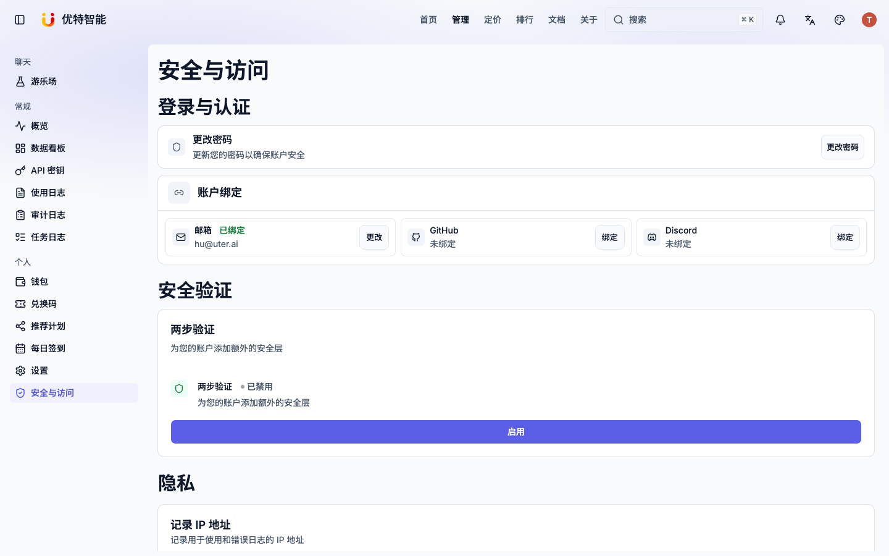 |
|
| 164 | box-shadow ×1 元素 /privacy-policy · dark |
需决策 | rgba(0, 0, 0, 0) 0px 0px 0px 0px, rgba(0, 0, 0, 0) 0px 0px 0px 0px, rgba(0, 0, 0, 0) 0px 0px 0px 0px, rgba(0, 0, 0, 0) 0px 0px 0px 0px, rgba(0, 0, 0, 0.6) 0px 1 → 卡片抬升 --ds-elevation-2 |
按文档建议执行：确认是否为规范登记的浮层阴影。最近令牌仅为数值近似，语义不适用；不机械替换。 | ||
| 165 | background-color ×1 元素 /dashboard · dark |
需决策 | rgba(11, 18, 31, 0.451) → 无最近令牌（语义不适用） | 按文档建议执行：确认是否为品牌色、图表色或需登记的新语义色。最近令牌仅为数值近似，语义不适用；不机械替换。 | ||
| 166 | background-color ×1 元素 /dashboard · dark |
需决策 | rgba(11, 17, 32, 0.749) → 无最近令牌（语义不适用） | 按文档建议执行：确认是否为品牌色、图表色或需登记的新语义色。最近令牌仅为数值近似，语义不适用；不机械替换。 | ||
| 167 | background-color ×1 元素 /dashboard · dark |
需决策 | rgba(255, 255, 255, 0.035) → 无最近令牌（语义不适用） | 按文档建议执行：确认是否为品牌色、图表色或需登记的新语义色。最近令牌仅为数值近似，语义不适用；不机械替换。 | ||
| 168 | background-color ×1 元素 /dashboard · dark |
需决策 | rgba(254, 154, 0, 1.000) → 无最近令牌（语义不适用） | 按文档建议执行：确认是否为品牌色、图表色或需登记的新语义色。最近令牌仅为数值近似，语义不适用；不机械替换。 | ||
| 169 | background-color ×1 元素 /usage-logs · dark |
需决策 | rgba(128, 29, 29, 0.651) → 无最近令牌（语义不适用） | 按文档建议执行：确认是否为品牌色、图表色或需登记的新语义色。最近令牌仅为数值近似，语义不适用；不机械替换。 | ||
| 170 | background-color ×1 元素 /usage-logs · dark |
需决策 | rgba(30, 41, 58, 0.702) → 无最近令牌（语义不适用） | 按文档建议执行：确认是否为品牌色、图表色或需登记的新语义色。最近令牌仅为数值近似，语义不适用；不机械替换。 | ||
| 171 | background-color ×1 元素 /usage-logs · dark |
需决策 | rgba(34, 197, 94, 0.702) → 无最近令牌（语义不适用） | 按文档建议执行：确认是否为品牌色、图表色或需登记的新语义色。最近令牌仅为数值近似，语义不适用；不机械替换。 | ||
| 172 | background-color ×1 元素 /playground · dark |
需决策 | rgba(30, 42, 60, 0.502) → 无最近令牌（语义不适用） | 按文档建议执行：确认是否为品牌色、图表色或需登记的新语义色。最近令牌仅为数值近似，语义不适用；不机械替换。 | 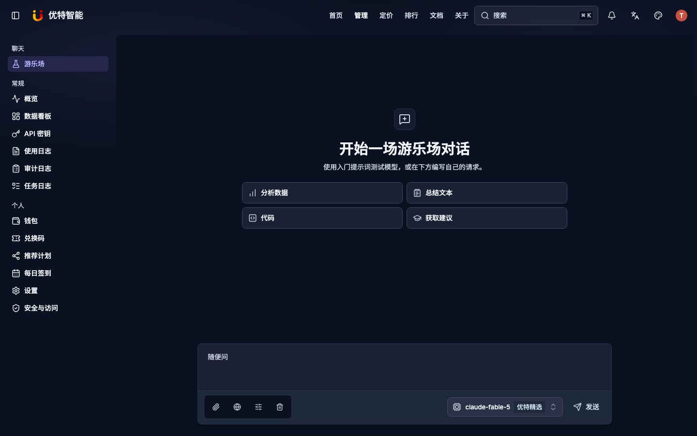 |
|
| 173 | background-color ×1 元素 /security · dark |
需决策 | rgba(18, 20, 41, 1.000) → 无最近令牌（语义不适用） | 按文档建议执行：确认是否为品牌色、图表色或需登记的新语义色。最近令牌仅为数值近似，语义不适用；不机械替换。 | 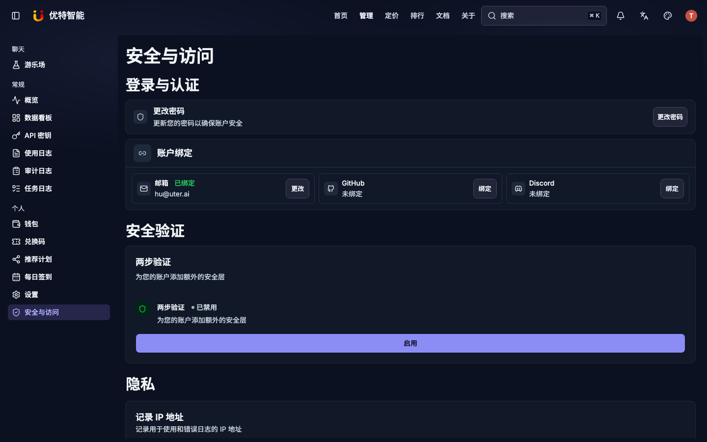 |